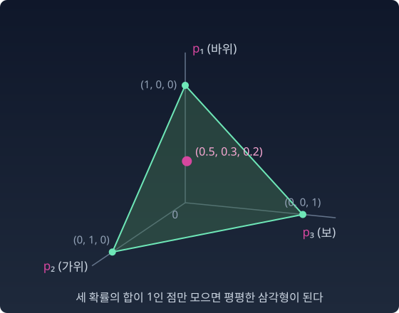

심플렉스: 결과가 셋인 모든 분포의 지도
가위바위보에서 상대의 버릇을 읽으려는 사람은 상대마다 바위, 가위, 보를 내는 비율을 적어 둔다. 상대가 열 명, 스무 명으로 늘면 숫자 세 개짜리 기록이 그만큼 쌓이고, 누가 누구와 비슷한지는 숫자 목록만으로 견주기 어렵다. 키의 분포는 평균과 표준편차 두 숫자로 평면 위에 늘어놓을 수 있었다.
가위바위보 선수의 '모든 가능한 버릇’도 그렇게 한눈에 볼 수 있을까?
가위바위보 — 세 확률이 곧 좌표
어떤 선수는 바위를 50%, 가위를 30%, 보를 20% 낸다. 다른 선수는 셋을 똑같이 낸다. 정규분포와 달리 여기에는 평균이나 표준편차 같은 이름난 모수(분포를 정하는 숫자)가 없다. 세 확률 자체가 좌표다.
숫자는 셋이지만 합이 1이라는 약속 때문에 자유로운 것은 둘뿐이다. 그래서 3차원 공간 속의 평평한 삼각형 하나가 된다.

삼각형 좌표 — 꼭짓점을 확률만큼 끌어당긴 무게중심
세 꼭짓점이 각각 “반드시 바위”, “반드시 가위”, "반드시 보"다. 분포는 세 꼭짓점을 확률만큼 끌어당긴 무게중심에 찍힌다. 한가운데는 셋을 똑같이 내는 선수, 곧 균등분포다. 변 위의 점은 한 가지를 절대 내지 않는 선수다. 어느 변 위에 있는지 보면 무엇을 버렸는지 안다.
불러오는 중…
파이썬
import numpy as np
V = np.array([[0.5, np.sqrt(3) / 2], # 꼭짓점 1: 반드시 바위
[0.0, 0.0], # 꼭짓점 2: 반드시 가위
[1.0, 0.0]]) # 꼭짓점 3: 반드시 보
def to_xy(p): # 분포 → 삼각형 위의 점 (꼭짓점의 가중평균)
return p @ V
def to_p(xy): # 삼각형 위의 점 → 분포 (선형방정식 풀기)
A = np.vstack([V.T, np.ones(3)])
return np.linalg.solve(A, np.append(xy, 1.0)) + 0.0
for p in [(1/3, 1/3, 1/3), (1, 0, 0), (0.5, 0.5, 0), (0.6, 0.3, 0.1)]:
xy = to_xy(np.array(p))
print(np.round(p, 3), "→", xy.round(3), "→", to_p(xy).round(3))
# [0.333 0.333 0.333] → [0.5 0.289] → [0.333 0.333 0.333]
# [1 0 0] → [0.5 0.866] → [1. 0. 0.]
# [0.5 0.5 0. ] → [0.25 0.433] → [0.5 0.5 0. ]
# [0.6 0.3 0.1] → [0.4 0.52] → [0.6 0.3 0.1]
분포에서 점으로, 점에서 다시 분포로. 왕복해도 아무것도 잃지 않는다. 두 번째 줄의 확정 분포는 꼭짓점에, 세 번째 줄은 "보"를 버린 선수라서 꼭짓점 1과 2를 잇는 변 위에 찍힌다.
ML에서: 언어 모델의 출력은 심플렉스의 점
언어 모델이 내놓는 다음 토큰의 확률표도 이런 도형 위의 점이다. 후보가 셋이면 바로 이 삼각형이다. 모델은 후보마다의 점수(로짓)에 지수를 씌워 합으로 나누는 소프트맥스로 이 점을 만든다. 그렇다면 소프트맥스가 닿을 수 있는 곳은 삼각형의 어디까지일까? 꼭짓점까지 갈 수 있을까?
수확
“이산분포(결과가 몇 개로 딱 떨어지는 분포) 전체는 심플렉스라는 하나의 도형이다.” 결과가 k개면 (k−1)차원 심플렉스가 된다. 삼각형은 그 가장 작은, 눈에 보이는 예다.
문제 7. 삼각형 위의 주소
꼭짓점을 V₁ = (0.5, √3/2) (바위), V₂ = (0, 0) (가위), V₃ = (1, 0) (보)로 둔 삼각형이 있다. (가) 분포 (0.2, 0.5, 0.3)을 삼각형 위의 점으로 옮겨라. (나) 그 점에서 세 변까지의 거리를 구하고, 분포의 세 숫자와의 관계를 말하라. (위 위젯의 「문제 7 불러오기」로 이 분포를 불러오고, 「세 변까지의 높이 보기」로 풀이를 견주어 볼 수 있다.)
함께 풀기

(0.2, 0.5, 0.3) 곱하기 꼭짓점이니까… 0.2 × (0, 0) + 0.5 × (1, 0) + 0.3 × (0.5, √3/2) = (0.65, 0.26)이요.

바위 확률이 0.2인 점인데, 바위 꼭짓점에 얼마나 가까워요?

높이가 0.26이면… 아, 제가 꼭짓점 순서를 바꿔 넣었어요. V₁부터 순서대로 하면 0.2 × (0.5, √3/2) + 0.5 × (0, 0) + 0.3 × (1, 0) = (0.4, 0.173)이에요.

그럼 (나)는 금방이에요. 세 숫자가 세 꼭짓점까지의 거리잖아요. 바위 꼭짓점까지 0.2.
확인해 봐요. (0.4, 0.173)에서 (0.5, 0.866)까지.

√(0.01 + 0.48)… 0.7이에요. 0.2가 아니네요. 게다가 확률이 크면 그 꼭짓점에 가까워야 하는데, 거리라면 반대로 멀어지잖아요.
바위 확률이 0이 되는 점들은 어디에 모여 있죠?

바위의 맞은편 변, 가위–보를 잇는 밑변이요. 그러니까 p₁은 꼭짓점까지가 아니라 맞은편 변에서부터 잰 높이예요. 점의 높이가 0.173이고, 전체 높이 √3/2 ≈ 0.866의 0.2배예요.
다른 두 변도 계산해 보니 0.433, 0.260이에요. 각각 0.866 × 0.5, 0.866 × 0.3이고요.
좌표가 "어디서부터 잰 거리"인지 기준을 잘못 잡았네요. 정삼각형 안의 한 점에서 세 변까지 거리의 합이 늘 높이와 같다는 비비아니 정리를 수업에서 배웠는데, 확률의 합이 1인 게 바로 그 정리였어요.
문제 8. 정답 꼭짓점과 라벨 스무딩
후보가 셋(바위, 가위, 보)인 분류 모델이 정답이 바위인 예로 학습한다. 목표 분포는 (1, 0, 0), 곧 삼각형의 바위 꼭짓점이다. 모델은 로짓 (z, 0, 0)에 소프트맥스를 씌워 확률을 낸다. (가) p₁ = 0.99와 0.999가 되려면 z는 각각 얼마여야 하는가? 목표 꼭짓점에 닿으려면? (나) 라벨 스무딩(label smoothing)은 작은 수 ε(엡실론)을 골라 목표를 (1 − ε + ε/3, ε/3, ε/3)으로 바꾼다. ε = 0.1이면 목표는 삼각형의 어디에 있고, 거기 닿는 z는 얼마인가? (다) 교차엔트로피 손실을 z로 미분하면 p₁ − (목표의 첫 칸)이다. 두 목표에서 학습은 z를 어디까지 밀어 가는가?
함께 풀기
코드로 z = 100을 넣었더니 p₁ = 1.0이 나와요. 닿았어요.
다른 두 칸은 뭐라고 나와?
3.8 × 10⁻⁴⁴요. 0이 아니네요… 1 − 7.6 × 10⁻⁴⁴는 float32로는 1과 구분되지 않아서 1.0으로 반올림된 거였어요.
식으로 보면요?
p₁ = ez/(ez + 2)니까 z = ln(2p₁/(1 − p₁))예요. 0.99면 5.29, 0.999면 7.60. p₁ = 1이 되려면 1 − p₁이 0이어야 하니까 어떤 유한한 z로도 안 돼요. 꼭짓점은 로짓으로 닿을 수 없는 곳이에요.
그러면 목표가 꼭짓점일 때 (다)의 기울기는요?

p₁ − 1인데 p₁은 늘 1보다 작으니까 늘 음수예요. 손실을 줄이려면 z를 키워야 하고… 끝없이 키우네요. 멈출 곳이 없어요.
라벨 스무딩 목표로 해 봐요.
ε = 0.1이면 목표는 (0.933, 0.033, 0.033)이에요. 꼭짓점 바로 옆, 삼각형 안쪽이요. z = ln 28 ≈ 3.33이면 p₁이 정확히 0.933이 돼서 기울기가 0이에요. 거기서 멈춰요.

삼각형 안쪽 점에는 소프트맥스가 유한한 로짓으로 닿고, 변과 꼭짓점에는 못 닿아요. 목표를 안쪽으로 조금 옮기니까 멈출 곳이 생겼어요.
그래요. 라벨 스무딩을 내놓은 2016년 논문도 원-핫 목표는 유한한 로짓으로 얻을 수 없고 가장 큰 로짓과 나머지의 차이를 한없이 벌리게 만든다는 것을 까닭으로 들었어요. 그 논문은 1,000개 부류에 ε = 0.1을 썼고요.
해석학에서 열린 집합은 자기 경계를 품지 않는다고 배웠는데, 소프트맥스가 내놓는 점들의 모임이 딱 삼각형의 안쪽, 경계를 뺀 열린 삼각형이네요.